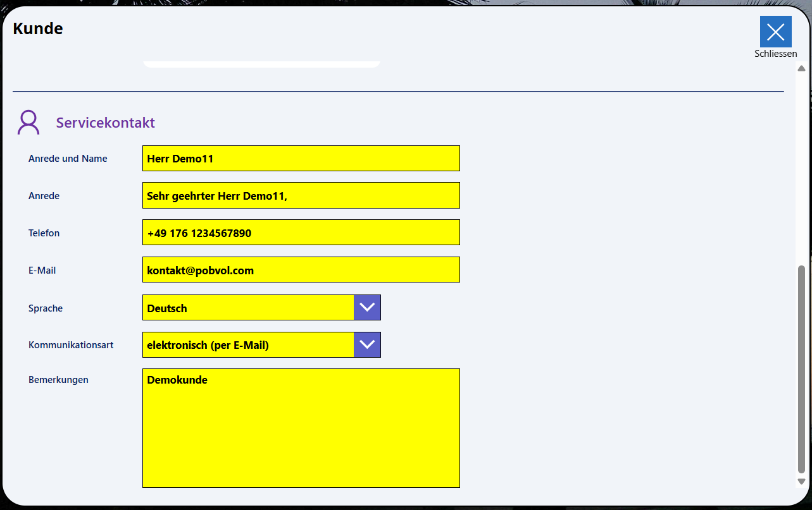
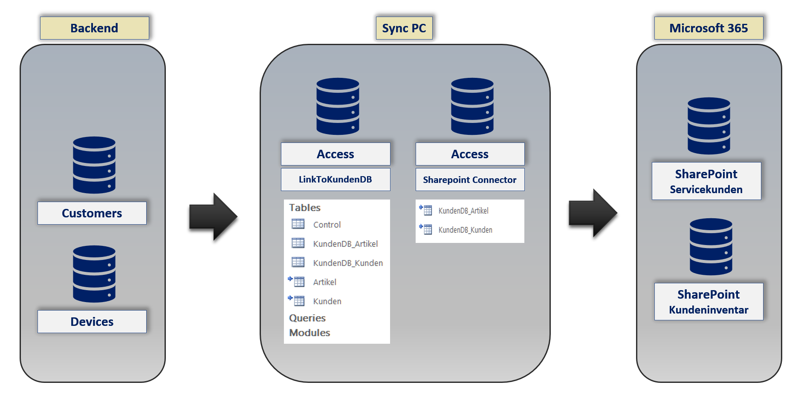

Benutzerhandbuch
pobvol Service Solution
Power App pssService Board
Stand: 9'25
Deutsch /
English
Benutzerhandbuch
pobvol Service Solution
Power App pssService Board
Stand: 9'25
Deutsch /
English
Kundendaten benötigt Ihr Serviceteam für die Planung und Dokumentation der Serviceaktivitäten.
Die Daten werden entweder von App-Admins in der Power App pssService Board erfasst oder aus einer angeschlossenen Datenbank übernommen.
Gespeichert werden die Daten in der SharePoint-Liste (SP-Liste) "Servicekunden".
Das Kunden-Icon
Anzahl Servicekunden
Servicekundenübersicht I
Servicekundenübersicht II
Die Kundendaten
Das Kundeninventar
Einen Servicekunden hinzufügen
Eine Datenbank anschließen
Top ↑
Auf jedem Screen der App pssService Board finden Sie links das Kunden-Icon.
Top ↑
Der StartScreen der App pssService Board zeigt im Bereich "Stammdaten" die Anzahl der hinterlegten Servicekunden an.
Ein Klick auf diesen Container öffnet den Screen "Servicekunden". Die Servicekundenübersicht mit der Detailanzeige wird eingeblendet.
Top ↑
Auf dem StartScreen der App pssService Board finden Sie im Bereich "Servicekunden" eine Kundenübersicht.
Um die Liste zu filtern, einfach einen Suchbegriff im Suchfeld eingeben. Es werden dann die Kunden angezeigt, bei denen der Suchbegriff gefunden wird. Überprüft werden dazu Kundennummer, Kundenname, Strasse, Postleitzahl, Kundenort, Land, Ansprechpartner, Telefon und E-Mail.
Sortiert wird die Liste nach Kundenname.
Ein Klick auf einen Eintrag öffnet den Screen "Servicekunden". Die Servicekundenübersicht mit der Detailanzeige wird eingeblendet und der ausgewählte Kunde angezeigt.
Top ↑
Mit einem Klick auf einen Kunden werden die Kundendaten in der Detailanzeige angezeigt.
Top ↑

Top ↑
Ein Klick auf einen Eintrag öffnet den Screen "Kundeninventar". Die Inventarübersicht mit der Detailanzeige wird eingeblendet. Das gesamte Inventar des Kunden wird gelistet und das ausgewählte Inventar angezeigt.
Top ↑
Auf dem StartScreen der App pssService Board die Servicekunden aufrufen. Die Servicekundenübersicht mit der Detailanzeige wird eingeblendet.
Das Icon "Kunde hinzufügen" wählen. In der Detailansicht wird "Kunde hinzufügen" eingeblendet.
Eine eindeutige Kundennummer eingeben. Geben Sie bitte die richtige Kundennummer ein. Dadurch werden geänderte Kundendaten automatisch aus einer eventuell angeschlossenen Datenbank übernommen. Für Kunden ohne Verbindung zu Ihrer Datenbank sollte ein separater Nummernkreis benutzt werden (bspw. ZDemo7).
Die Kundendaten eingeben. Pflichtfelder sind Kundennummer, Kunde, Kundenort. Kundenummer, Name und Adresse benötigt Ihr Serviceteam für alle Aktivitäten. Die GPS-Koordinaten helfen bei der Nutzung von Navigationssoftware.
Nach unten scrollen und die Kontaktdaten eingeben. Ein Servicekontakt mit Telefon und E-Mail wird benötigt, damit Ihr Serviceteam den Kunden kontaktieren kann.

Die Sprache hilft bei der Kommunikation mit dem Kunden. Möglich sind derzeit Deutsch und Englisch. Die Lösung nutzt die Sprache bei der automatischen Erstellung von Serviceberichten, E-Mails und Briefen.
Legen Sie auch die Kommunikationsart fest. Möglich sind "postalisch (per Brief)" und "elektronisch (per E-Mail)". Wünscht der Kunde die Kommunikation per E-Mail, werden genehmigte Serviceberichte automatisch per E-Mail an den Kunden gesendet.
Eingegebene Daten wurden bereits automatisch gespeichert. Zum Schluss reicht daher ein Klick auf das Icon Schliessen, um den Bearbeitungsmodus zu beenden.
Top ↑
Servicekunden und Kundeninventar können aus einer angeschlossenen Datenbank übernommen werden. Eine Anpassung der Stammdaten entfällt in diesem Fall.

Es werden nur die Stammdaten übernommen, die auch benötigt werden! Demodaten-Flag gesetzt? Servicevorgang erfasst? Kunde in SP-Liste Servicekunden vorhanden? Kundeninventar in SP-Liste Kundeninventar vorhanden?